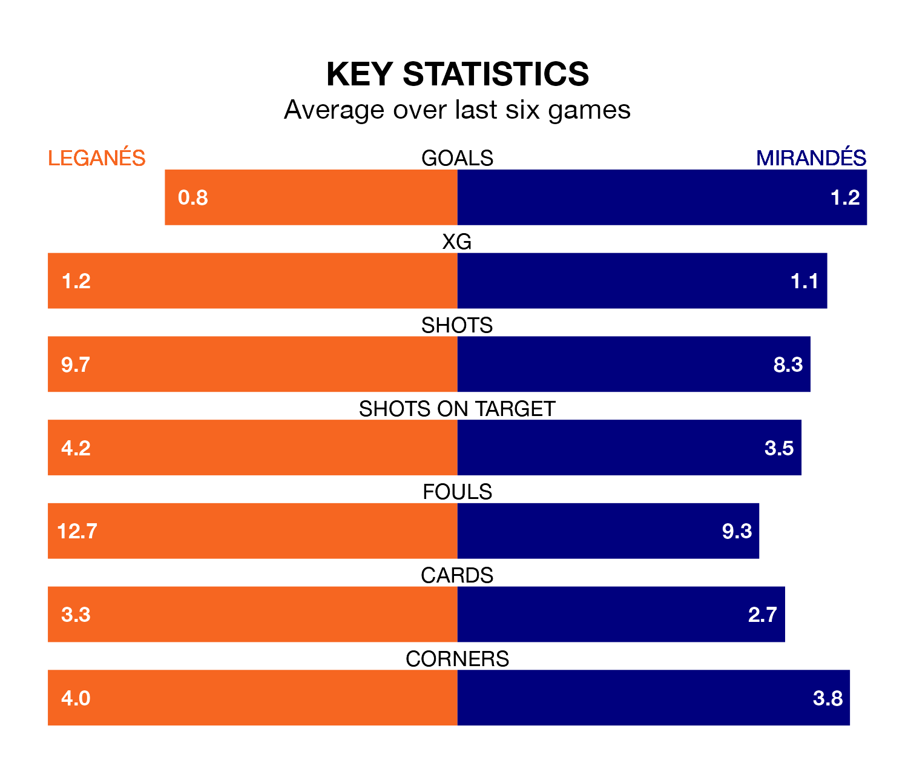

Leganés are heavy favourites to keep all three points at home in Sunday lunchtime's kick-off against Mirandés.
Leganés, who sit top of the Segunda División with 30 games played, are priced at 1.4 to seal victory at Estadio Municipal de Butarque.
Sitting 15 places and 17 points behind them in the table, Mirandés are 9.0 to win with *Betting Company*, while the draw is at 4.0.
With 41 goals in 30 games so far this season, Leganés are scoring more than average in the league with 1.4 goals per game. And they are conceding fewer than average, letting in 20 goals at a rate of 0.7 per game.
Mirandés are also above average scorers, with 1.2 goals per game, compared to a league average of 1.1. They have conceded 1.3 goals per game.
With Diego Conde between the sticks, the home side can rely on one of the league's safest pair of hands. He has kept 13 clean sheets in his 28 appearances this season, and only one other 'keeper – SD Huesca's Álvaro Fernández – has been able to prevent the opposition scoring on more occasions in the Segunda División.
In the visitors' net, Ramón Juan Ramírez has seven clean sheets in 23 games. He has conceded a goal every 83 minutes, 60% more often than the 136 minutes between goals for Conde Alcolado.
In the last 10 years, Leganés and Mirandés have played each other on 11 occasions. Leganés won six of them, Mirandés one, and they drew four times.
On average, Leganés scored 1.4 goals and Mirandés 0.5 in those matches.
Their last meeting was on September 24, when Leganés won 3-1 away.
Leganés are in mixed form in the Segunda División, with two wins and two draws from their last six games.
With two wins and four losses over that period, Mirandés's form is slightly worse – they have taken six points from 18, compared to Leganés's eight.
Leganés's last match was on Monday, a 1-0 win against SD Amorebieta, with Juan Cruz getting the goal for Leganés.
Mirandés beat CD Eldense 3-1 last time out, on March 9, with Carlos Martín (two) and Gabriel Martínez Aguilera on the scoresheet.
Sunday's match will be refereed by Iván Caparrós Hernández, who has taken charge of 15 Segunda División games so far this season, issuing three red cards and booking 82 players. He has awarded five penalties.
The last Leganés game Caparrós Hernández refereed was a 1-1 home draw with CD Tenerife on December 20. His last Mirandés match was their 4-3 win at home against FC Andorra on September 10.
Updated: 15:10 (UTC), 15/03/24